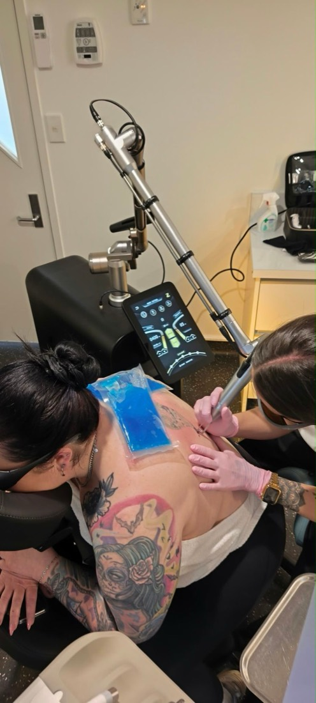

01
Laser Tattoo Removal
Q-switched laser light is absorbed by the ink and shatters it into fragments small enough for the body to clear on its own. It is a gradual process worked through over a series of sessions rather than a single appointment.
Most ink colours can be treated here, not just black. Greens and blues are the ones that commonly stall on standard equipment — The Laser Co. works them with specialised dye handpieces, so colour that has been left half-finished elsewhere is worth bringing in.
How a tattoo will respond depends on its size, ink density, colours, age, placement and your skin. All of that is assessed at consultation, so you get a realistic picture of sessions and cost before you commit to anything.
